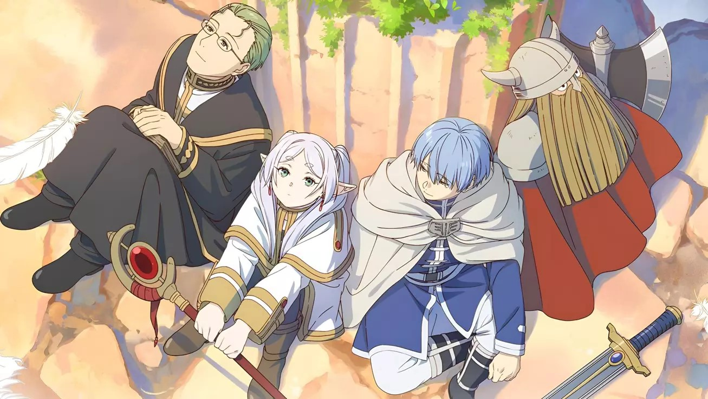

About Friren
마왕을 쓰러트리고 대륙의 평화를 가져온 용사 파티의 일원이자 천 년 이상을 살아온 엘프 대마법사. 판타지 만화 및 애니메이션 장송의 프리렌의 주인공으로, 정통 판타지의 '엘프 마법사' 설정을 비틀어 깊은 여운을 주는 캐릭터입니다.

장송의 프리렌 中
Friren's Characteristics
- 성격은 흐리터분하고 무미건조.
- 마법이라면 어떤 것이든 흥미를 가지는 마법 오타쿠.
- 여행을 거치며, 자신도 모르는 사이 그 마음에도 변화가 나타난다.
Friren's Friends
마왕 토벌 후 수십 년이 지났고,
인간을 더 깊이 이해하기 위해 출발한 여정을 함께 하는 멤버들.